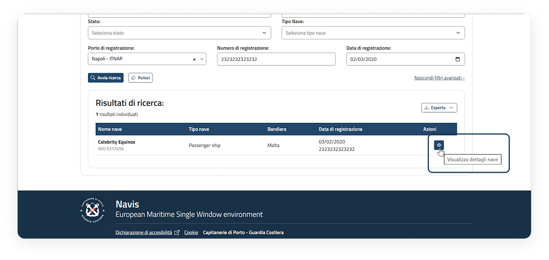
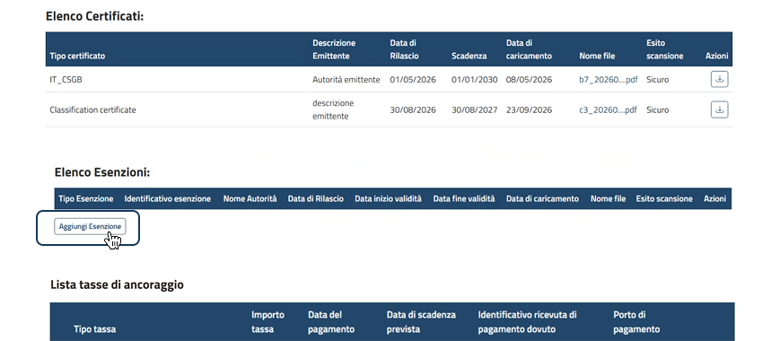
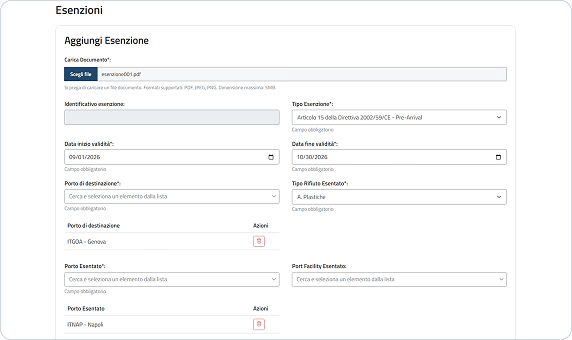
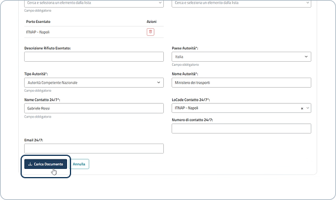
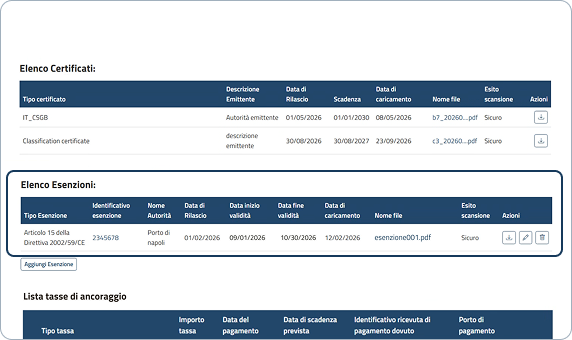

Anagrafica nave
Il portale delle Smart Guide è uno spazio digitale che raccoglie risorse pratiche e aggiornate in un unico ambiente intuitivo. Strumenti chiari e organizzati per organizzarti e trovare subito ciò che ti serve.
02.
Gestione elenco Esenzioni
Una panoramica sul flusso di gestione elenco esenzioni.
Punto di accesso
La voce di menù
Dalla dashboard, è possibile accedere alle principali sezioni tramite le voci di menu.
Menu a tendina
Cliccando sulla voce "Gestione e Consultazione" viene visualizzato un menu a tendina, da cui è possibile accedere alla pagina di "Anagrafica navi".

Anagrafica navi
Passaggi per aggiungere un'esenzione
Il Responsabile Centrale/Locale può aggiungere un'esenzione tramite i seguenti passaggi:
Accesso al dettaglio dell'anagrafica nave
Nell'elenco risultati di ricerca è possibile accedere al dettaglio in modalità visualizzazione cliccando sull'"icona dell'occhio".

Aggiungi esenzione
All'interno dell'elenco delle esenzioni è possibile aggiungerne delle altre cliccando il pulsante "Aggiungi Esenzione".

Inserimento informazioni esenzione (1)
Caricare il documento dell'esenzione cliccando il pulsante "Scegli file" e successivamente inserire i dati richiesti come: tipo esenzione, data inizio e fine validità, porto di destinazione, tipo rifiuto esentato, porto esentato e port facility esentato. Per i campi porto di destinazione, porto esentato e port facility è possibile aggiungerne uno o più di uno tramite ricerca e selezione e, una volta aggiunti, eliminarli tramite il pulsante con l'icona del cestino.

Inserimento informazioni esenzione (2)
Aggiungere: descrizione rifiuto esentato, paese autorità, tipo autorità, nome autorità, nome contatto 24/7, LoCode contatto 24/7, numero di contatto e mail. Cliccare il pulsante "Carica documento" per aggiungere l'esenzione.

Esenzione aggiunta in elenco e azioni disponibili
Dopo aver caricato il documento, l'esenzione viene aggiunta all'interno dell'elenco esenzioni e sarà possibile scaricarla, modificarla ed eliminarla tramite gli appositi pulsanti.

Il campo "Port facility esentato" si abilita dopo la selezione del porto nel campo "Porto esentato" e presenta esclusivamente le Port facility associate al porto precedentemente selezionato.